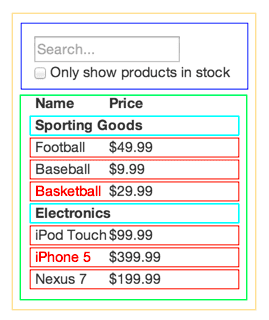

React
Made by Maria Rogozhkina
What is React?
- React is a JavaScript library — one of the most popular ones, with over 100,000 stars on GitHub.
- React is not a framework (unlike Angular).
- React is an open-source project created by Facebook.
- React is used in the front-end to build user interfaces (UI).
What is the goal?
The main task of React is to ensure that what can be seen on web pages is displayed on the screen. React facilitates interface creation greatly by breaking each page into small fragments. We call these fragments components.
Components
A React component is, simply put, a piece of code that represents part of a web page. Each component is a JavaScript function that returns a piece of code representing a fragment of a page. Almost everything in React consists of components, which are divided into class components and simple components.
Example of a simple component
function OurFirstComponent() {
return (
Hello, I am a React Component!
);
}
Example of a class component
class App extends Component {
render() {
return (
Hello, React!
)
}
}
Props
Props are an effective way to pass existing data to a React component. The component cannot change the props — they're read-only.
Example
function Welcome(props) {
return Hello, {props.name}
;
}
const element = < Welcome name="Alice" />;
ReactDOM.render(
element,
document.getElementById('root')
);
Result: "Hello, Alice" on the page
State
State is any data that should be saved and modified without necessarily being added to a database.
Example
class Hello extends React.Component {
constructor(){
super();
this.state = {
message: "my friend (from state)!"
};
this.updateMessage = this.updateMessage.bind(this);
}
updateMessage() {
this.setState({
message: "my friend (from changed state)!"
});
}
render() {
return (
Hello {this.state.message}!
)
}
}
Thinking in React
1. Break UI Into A Component Hierarchy
Single responsibility principle
2. Build A Static Version in React
3. Identify Minimal (but complete) Representation Of UI State
4. Identify Where Your State Should Live
5. Add Inverse Data Flow
Thank you